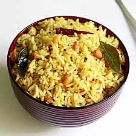

Pulihora

Description
Pulihora is a traditional south indian dish. Well loved for it's savoury tangy taste and it's yellow allure, this well blending dish has changed itself throughout the course of time and is still a go to favourite for many in the regions.
A timeless recipie from the time of the ancients, known as Haridranna in the Sanskrit Agamas, the dish is equally relished by both the numens and daemons. It's older version displayed itself with a beautiful pepper spiciness (still served in Tirumala) but, after the advent of chilli peppers from Americas into the Indian subcontinent, the newer variety has gained prominence due to it's versitality and longer shelf-life.
Ingredients
- Medium-grain white Rice:- 1cup
- Water:- 4cups (13/4 cups to cook rice other as needed)
- Clean Tamarind
- Dried chilli pods (Preferrably Guntur chillis):- 20
- 2 spicy Green Chilli pods
- Oil (Sesame/ Groundnut):- 1cup
- Dried Mustard Seeds, Urad Dal, Chana Dal, Curry Leaves, Turmeric, Salt
Steps of Preparation
This dish has two major components that have to be mixed. The tamarind pulp, turmeric rice which are then mixed and a tempering is added to it. I'll present steps for each of these components separately.
Turmeric Rice Prep:
- First take 1cup of rice and rinse it 3-5 times under water to clean it off the excessive starch and ensure to drain the water completely after every wash.
- Take a pressure cooker and add 13/4 cups of water to it and the 1 cup of rinsed rice and cook the rice.
- Once cooked, immediately ransfer the rice into a basin (a large suface area bowl would also do)
-
To this basin, in the center (obv in the center of rice), add 1/4 teaspoon turmeric, 1-2 twig number of curry leaves and add 1/5th cup of oil so that it coats the turmeric and curry leaves. Now mix these throughly.
Note:This step is best done when the rice is smoky hot.
- Now let this mixture cool down.
Tamarind Pulp Recipie:
- Take a small bowl and add two lime sized tamarind balls to the water and rise it once and keep it aside.
- Now, take some water in which the balls would get immersed totally and bring it to a boil and then, add these tamarind balls to it. Set this aside to cool down to room temperature.
- After reaching the room temperature/temperature that your hand can bear, extract the pulp out from the tamarind by squeezing it out as much as possible. So as not to waste the pulp just add some water ensure all pulp is removed.
- Now slit the green chillies, add 1 twig of curry leaves and put it on stove and boil until all of the extra water is gone
- Once gone, let the mixture cool.
Final Steps (Mixing and Tempering):
- Mix the pulp and rice as per taste and add salt to taste
- Take the left off oil, heat it in a kadhai, once enough hot, add the mustard seed and once they start popping, add in 2-3tbsp of chana dal, 1-tsp of urad dal, the 20 pods of dry chillies (without seeds) and fry until all the dals turn into red. Add 3-4 twigs of curry leaves and switch off the flame.
- Add this tempering mixture to the rice when hot.
- Set aside for 1hr and enjoy it!!!!